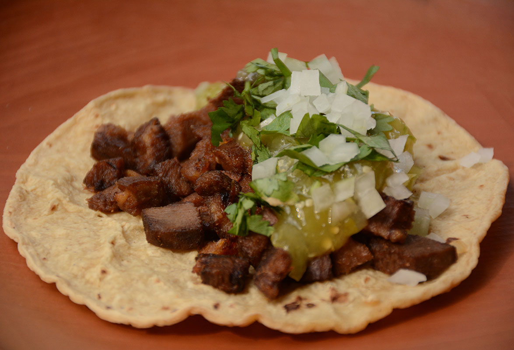

Taco de Lengua

Description
If you have a simmered tongue in your fridge—and getting to that stage takes no more effort than simmering a tongue in a whole pot with onions and some herbs—then you're close to having dinner on the table. At home, you have the freedom to use pork or lamb's tongue in lieu of the more classic beef or veal tongue. You cut up the tongue, put down a pat of oil or lard in your pan, and stand over the skillet until the tongue is ready to be moved onto the tortilla, and not one second before. Simple as that.
Ingredients
- 1.5 pounds (24 ounces) cow or veal tongue
- 1 medium onion, split in half
- 2 bay leaves
- 6 stems cilantro
- 1 small carrot, peeled and roughly chopped
- 2 cloves garlic
- 1 quart low-sodium homemade or store-bought chicken stock
- 2 tablespoons duck fat, pork fat, or canola oil
- Kosher salt and freshly ground black pepper
- 16 to 24 corn tortillas
Steps
- Place tongue, onion, bay leaves, cilantro stems, carrot, and garlic in a saucepan just big enough to hold them. Add chicken broth until mostly covered (you may not need all of it, depending on how big your pot is). Bring to a boil over high heat, reduce to a simmer, cover with a tight-fitting lid, and cook until completely tender, 4 to 6 hours depending on the size of the tongue, adding extra water as necessary to keep the tongue mostly submerged.
- Carefully remove tongue to a cutting board. Strain stock and discard solids, reserving liquid for another use. Peel the outer membrane off the tongue and discard. Roughly chop tongue into 1/2-inch pieces. Tongue can be prepared up through this step up to 5 days in advance. Store in an airtight container or zipper-lock bag in the fridge.
- When ready to serve, heat oil or lard in a large non-stick or cast iron skillet set over medium-high heat until shimmering. Add tongue pieces and cook, stirring occasionally, until tongue is well browned on all sides, 5 to 8 minutes total. Season to taste with salt and pepper.
- To serve, wrap a spoonful or two of tongue in a double layer of corn tortillas. Top as desired.